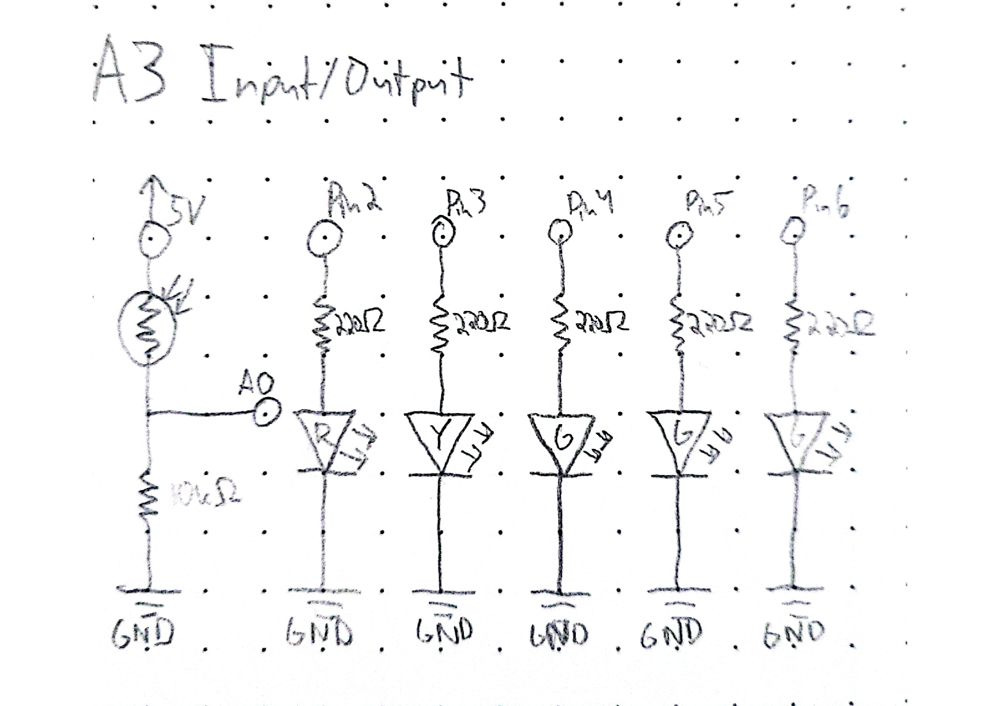
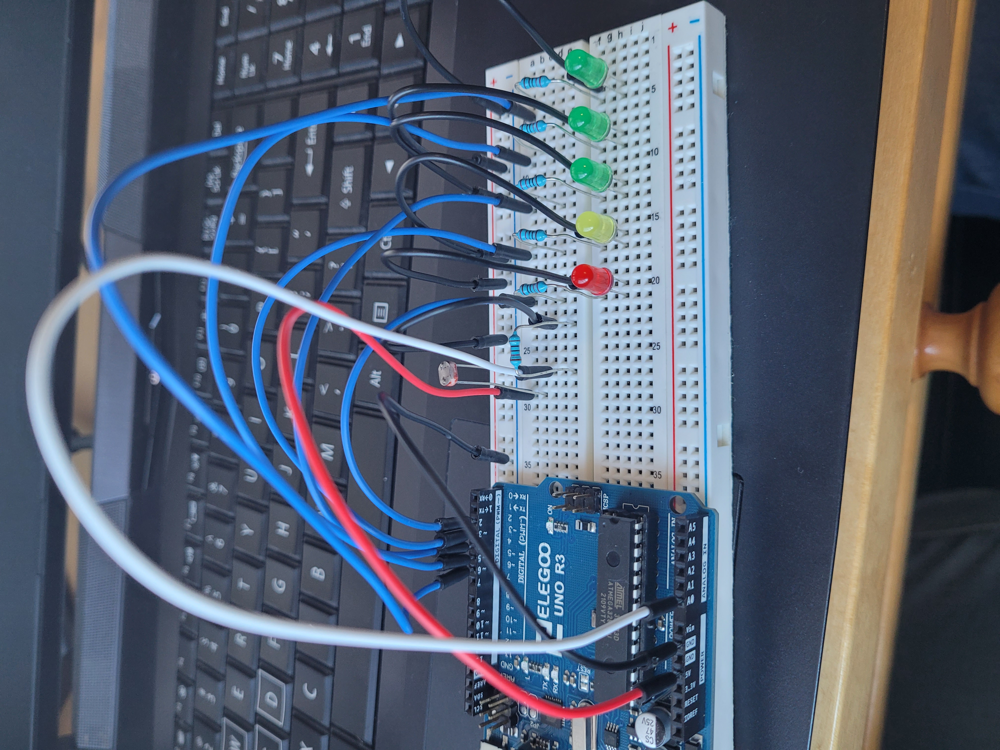
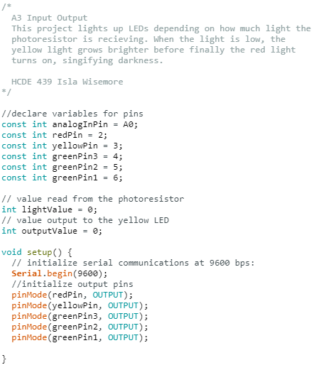

Isla's Assignment 3!

I used a 10k resistor for the voltage divider because
it matched the range of the photoresistor.

Blue wires go to output pins, while white goes to an
analog in pin. Red is power and black is ground.



The lights correspond to the light level picked up
by the photoresistor, with level yellow getting brighter
as the light level decreases to red.
Here is all the documentation for assignment 3!